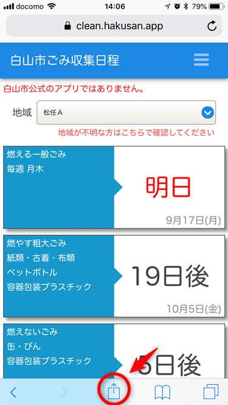
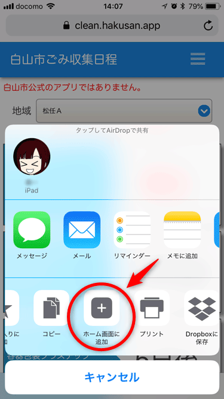
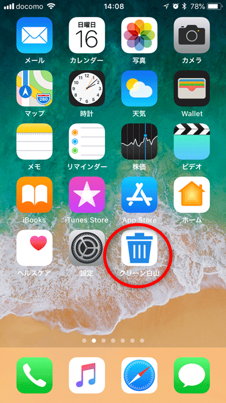
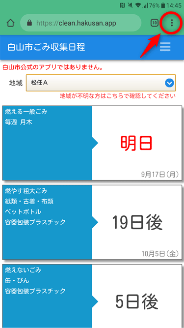
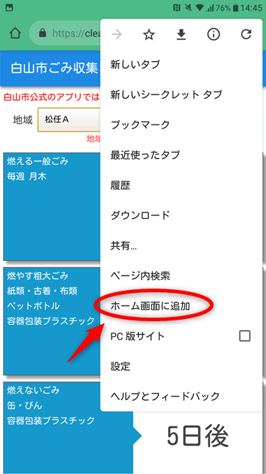
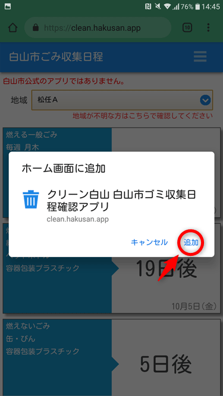

iPhoneのアプリのインストール方法  ① https://clean.hakusan.appにアクセスして共有ボタンを押します。  ② ホーム画面に追加を押します。  ③ ホーム画面に追加されます。 Androidのアプリのインストール方法  ① https://clean.hakusan.appにアクセスしてメニューを押します。  ② ホーム画面に追加を押します。  ③ 追加を押すと、ホーム画面に追加されます。